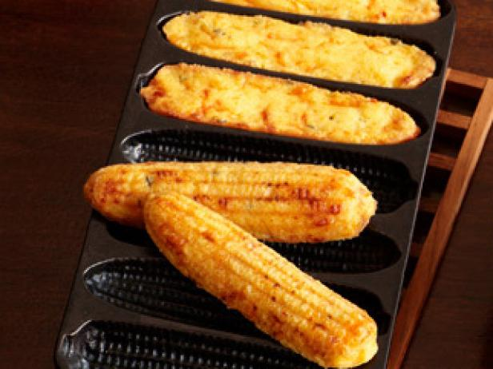

Browned Butter Cornbread

Browned butter cornbread baked in a cast iron corn pone pan.
Not too sweet, not too savoury, but warm, rich, nutty cornbread goodness. Adapted from Binging with Babish.
Ingredients
- 8 Tbsp butter, melted
- 5 oz of finely ground cornmeal
- 5 oz of all-purpose flour
- ½ tsp of baking powder
- ½ tsp of baking soda
- 1 tsp of kosher salt
- 3 tbsp of sugar
- 1 ½ cups of buttermilk
- 2 large eggs
- Sea Salt
- Honey
Instructions
- In a mixing bowl, combine 5 ounces of finely ground cornmeal and 5 ounces of all-purpose flour. Add ½ a teaspoon of baking powder, ½ a teaspoon of baking soda, 1 teaspoon of kosher salt, and 3 tablespoons of sugar. Whisk together accordingly.
- In a separate mixing bowl, whisk 2 large eggs and 1 ½ cups of buttermilk together.
- Melt 1 stick of butter in a cast iron skillet over medium heat while swirling constantly to prevent it from overheating and exploding. Swirl until the milk fats separate and begin to turn brown.
- Pour the butter into a heat-proof container and add 2 ice cubes to allow it to cool down rapidly. Give it a little mix for 1 to 2 minutes or until the ice cubes are fully melted.
- Combine the butter with the egg and buttermilk mixture and then pour to combine with your dry ingredients. Gently paddle to combine until you end up with a pancake batter consistency.
- Using the same cast iron skillet that is still lubed up with about 1 tablespoon of the brown butter, add the cornbread batter and smooth it out on the top. Place the skillet into a 425°F oven for 20 to 25 minutes until deep golden brown around the edges.
- Ensure that the cornbread is cooked by using a toothpick and making sure that there are only a few moist crumbs remaining on the toothpick. After allowing the cornbread to cool in the skillet for about 5 to 10 minutes, give it a drizzle of honey and brush it on for even coverage to create a shiny and sticky glaze. Then, give it a sprinkling of flaky sea salt.
- Carefully remove the cornbread from the skillet and allow it to cool on a wire rack for about 10 to 15 minutes before slicing and serving while it is still warm.